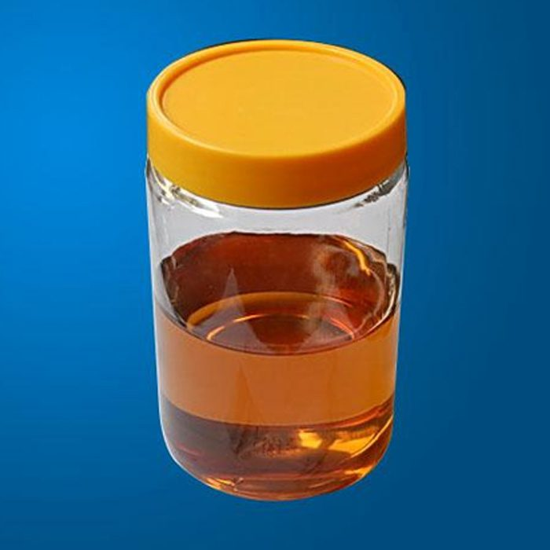
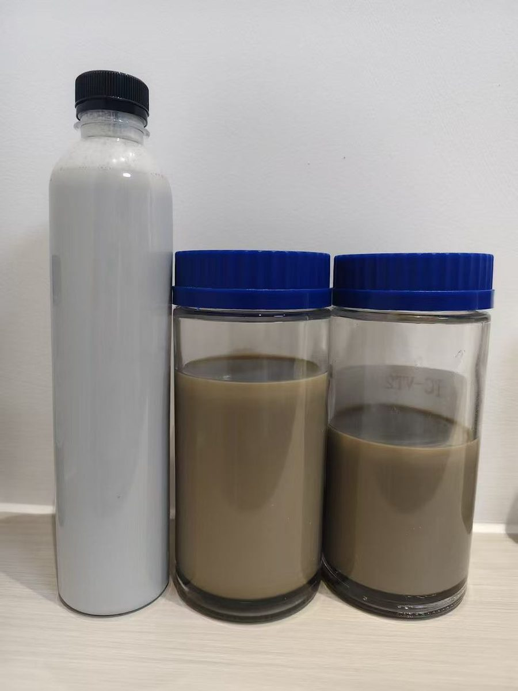
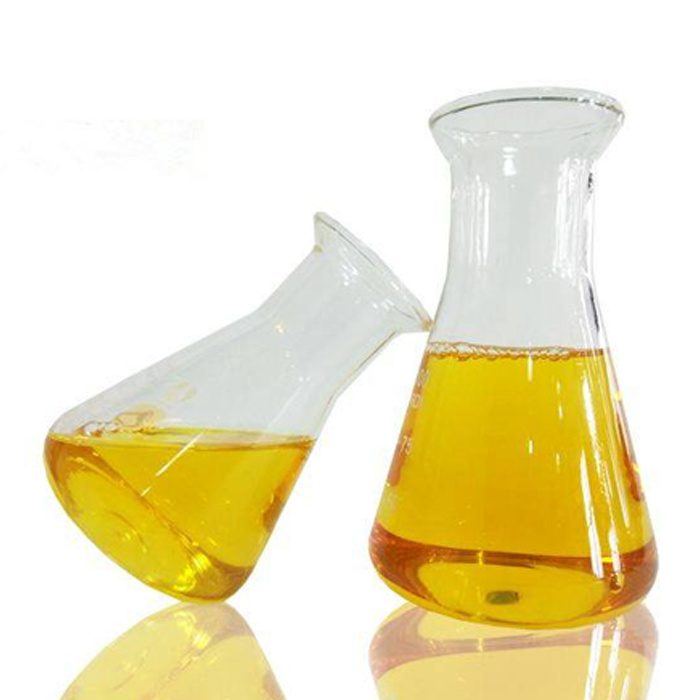
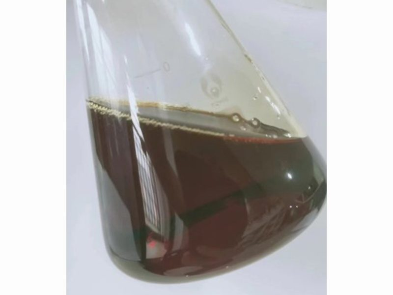

TC-350 油性系列 / TC-830 水性系列，降低油水界面表面张力、加速油水分离，用于油田和炼厂的原油破乳脱水脱盐。

TC-MD511/TC-MD315 型，用于 FCC 流化催化裂化装置钝钒，保护催化剂活性，适用于石油炼制厂。
TC-10129 型，高沸点氨基硼酸酯与有机聚硫化物复合制剂，可在 200-400℃ 高温条件下控制常减压蒸馏装置高温部位的环烷酸腐蚀。

TC-10106 型，中和塔顶冷凝区酸性物质并形成保护膜，控制塔顶轻油部位的酸腐蚀和垢下腐蚀，可替代蒸馏装置的注氨和注缓蚀剂。

TC-10222 型，有机胺高分子表面活性剂，强力吸附在金属表面形成致密分子膜，用于原油天然气开采集输及炼油装置塔顶低温部位的防腐。
我们的技术团队随时为您提供燃油添加剂与油田助剂的专业解决方案